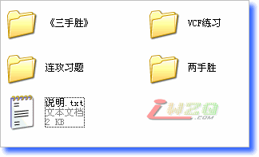
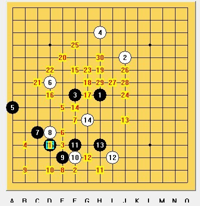
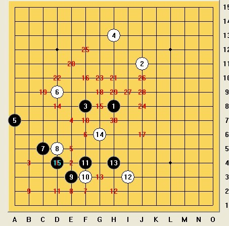

【推荐】日本连珠天狗道场【屏蔽整理版】
#1 <font color="red">【推荐】日本连珠天狗道场【屏蔽整理版】</font> 作者：有志青年 发表时间：2008-5-31 6:53:08
【有志注：首先感谢屏蔽抽出时间将360道天狗道场的题目分类整理，并与大家共享！我想这个整理版一定会比原版的传播更广，所以专开新帖，以免埋没了，^_^，以下内容为屏蔽所注】

分类：
《三手胜》共120道习题，题目均选自《三手胜五子棋题解》（[日]坂田吾郎 八段著），分入门题、初级题、中级题、高级题四部分，有一定阶梯性；
VCF练习共12道习题，均为VCF习题，全部题目在《连珠路遥 五子棋取胜技巧解说》（陆瑶 四段著）都有收录；
连攻习题共120道题目，总体而言难度与《三手胜》高级题相当或更高；
两手胜共99道题目，均为两手胜习题（请初学者首先明确“两手胜”的定义！），部分题目在《连珠路遥 五子棋取胜技巧解说》（陆瑶 四段著）中有收录。
更正：
一幅VCF练习的图片与其他两幅图中的部分题目完全重复，已删除（包括iwzq标志一个）；
两手胜最后一幅图中原有的三个题目与VCF练习的一幅图中部分题目重复，已修改（包括iwzq标志一个）。
声明：
全部题目为爱五子棋网（www.iwzq.com）全权搜集和提供，我只负责进行分类整理工作，如有任何不妥，请与本人联系；
本人不保证题目的合理性以及全部题目分类的准确性，手工操作还是有一定错误的可能，况且没有经过正式验证。进一步的考察预计将于今年暑假期间（2008年7-8月间）进行，我会确认题目的分类，同时尽可能给出所有的答案。
最后再次感谢爱五子棋网分享这份宝贵的资源！
屏蔽
2008年5月30日星期五
#2 Re:【推荐】日本连珠天狗道场【屏蔽整理版】 作者：爱在晴天 发表时间：2008-5-31 19:06:13
太谢谢啦，感谢啦，一定好好学习#3 Re:【推荐】日本连珠天狗道场【屏蔽整理版】 作者：糖醋小排 发表时间：2008-6-9 11:29:31
好东西，慢慢看，感谢了
#4 Re:【推荐】日本连珠天狗道场【屏蔽整理版】 作者：我想学棋 发表时间：2008-6-17 22:05:32
哈哈,这个是整理过的呀,哇,谢谢#5 Re:【推荐】日本连珠天狗道场【屏蔽整理版】 作者：被逼注册 发表时间：2008-7-5 13:00:57
连攻习题里的 24-30 名字错了，应该是25-30
#6 Re:【推荐】日本连珠天狗道场【屏蔽整理版】 作者：菜巫妖 发表时间：2008-7-5 13:28:30
这些题都好难，要做出来得到什么时候啊#7 Re:【推荐】日本连珠天狗道场【屏蔽整理版】 作者：被逼注册 发表时间：2008-7-6 10:19:20
强烈要求把水印去掉，有很多图都被挡着了，看了很不方便
以下是一些被挡着的图
两手胜 13-18
两手胜 25-30
两手胜 31-36
两手胜 79-84
VCF 1-6
VCF 7-12
连攻习题 19-24
连攻习题 97-102
#8 Re:【推荐】日本连珠天狗道场【屏蔽整理版】 作者：屏蔽 发表时间：2008-7-7 0:10:04
这个就要问有志咯……我不太清楚，是不是上传图片的时候自动加上的？
有时候确实不太方便，但是保护版权还是重要的。免费不等于随意。
建议能不能改个小一点的图标，或者在整个图片上做一个极浅的大水印（很常见的）？
#9 Re:【推荐】日本连珠天狗道场【屏蔽整理版】 作者：有志青年 发表时间：2008-7-7 5:04:34
这段时间太忙了，稍等一段日子，我认真处理此事。#10 Re:【推荐】日本连珠天狗道场【屏蔽整理版】 作者：爱谁谁 发表时间：2008-7-22 8:01:14
俺先看看,应该是好东西,嘿嘿
#11 Re:【推荐】日本连珠天狗道场【屏蔽整理版】 作者：五星若连珠 发表时间：2009-1-6 21:45:25
下载了，坂田三手的我还打印成册，以便学习。
#12 Re:【推荐】日本连珠天狗道场【屏蔽整理版】 作者：旖旎阳光 发表时间：2009-1-7 17:00:12
太好了，谢谢有志青年啊#13 Re:【推荐】日本连珠天狗道场【屏蔽整理版】 作者：阿歌 发表时间：2009-2-5 11:30:51
下载了先。
谢谢
#14 Re:【推荐】日本连珠天狗道场【屏蔽整理版】 作者：自来自去 发表时间：2009-6-29 17:16:35
下载了怎么解压错误的？文件损坏了？
【有志青年：文件正常2009-6-29】
#15 Re:【推荐】日本连珠天狗道场【屏蔽整理版】 作者：快乐三点红 发表时间：2009-7-4 23:29:54
太好了太好了#16 Re:【推荐】日本连珠天狗道场【屏蔽整理版】 作者：佛心诚 发表时间：2009-7-5 5:46:24
这个网站真的很好,感动的不得了
［ 掌棋宣传员 于 2010-8-5 23:26:52 时花20金币送鲜花一朵］
#17 Re:【推荐】日本连珠天狗道场【屏蔽整理版】 作者：嘉鱼 发表时间：2010-7-24 19:06:14
感谢楼主，回去好好看#18 Re:【推荐】日本连珠天狗道场【屏蔽整理版】 作者：物质波 发表时间：2010-7-31 11:07:19
谢谢了，多学习
#19 Re:【推荐】日本连珠天狗道场【屏蔽整理版】 作者：杜宏宇 发表时间：2010-8-5 16:37:38
这个是好东西，比我在网上找的原版好
［ 掌棋宣传员 于 2010-8-5 23:27:07 时花20金币送鲜花一朵］
#20 Re:【推荐】日本连珠天狗道场【屏蔽整理版】 作者：颠覆小忧 发表时间：2010-8-19 17:25:26
我也下载了，感觉受益匪浅，谢谢楼主了！万分感谢！#21 Re:【推荐】日本连珠天狗道场【屏蔽整理版】 作者：dbycz 发表时间：2010-9-5 12:08:59
=======上图对应的爱五子棋谱代码如下，以便你拆解：========
h8j11f8h13a7d9c5d5e3f3f4i3h4
======================================================
求解，这题VCF我算不出来
#22 Re:【推荐】日本连珠天狗道场【屏蔽整理版】 作者：dbycz 发表时间：2010-9-5 12:11:23
=======上图对应的爱五子棋谱代码如下，以便你拆解：========
h8j11f8h13a7d9c5d5e3f3f4i3h4g6
======================================================
中间漏了一个白，继续求解
#23 Re:【推荐】日本连珠天狗道场【屏蔽整理版】 作者：失落刀 发表时间：2010-9-5 15:01:37
#24 Re:【推荐】日本连珠天狗道场【屏蔽整理版】 作者：冷酒一杯 发表时间：2010-9-6 19:51:02
#25 Re:【推荐】日本连珠天狗道场【屏蔽整理版】 作者：苯酚 发表时间：2010-9-7 20:54:08
=======上图对应的爱五子棋谱代码如下，以便你拆解：========
h8j11f8h13a7d9c5d5e3f3f4i3h4g6h6
======================================================
这个15之后vcf就短多了，为什么一定要全部vcf啊
#26 Re:【推荐】日本连珠天狗道场【屏蔽整理版】 作者：巫山云雨 发表时间：2010-9-29 9:12:57
呵呵不错不错#27 Re:【推荐】日本连珠天狗道场【屏蔽整理版】 作者：角鬥士 发表时间：2010-11-27 14:12:09
太谢谢啦，感谢啦，一定好好学习#28 Re:【推荐】日本连珠天狗道场【屏蔽整理版】 作者：张奡 发表时间：2011-5-20 18:40:38
我只能说，我太喜欢楼主了！是个大好人！
#29 Re:【推荐】日本连珠天狗道场【屏蔽整理版】 作者：夜冷彩殇 发表时间：2011-8-19 17:01:24
才注意到这里面有两手胜 我觉得两手胜对新手是非常好的
对新手的价值应该比三手胜还大